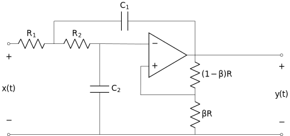
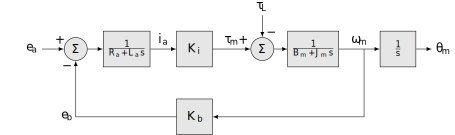
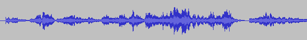
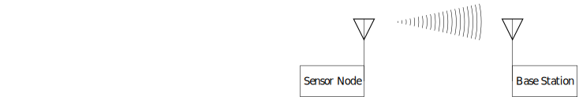

1 Course Introduction
The concepts and techniques in this course are probably the most useful in engineering. A signal is a function of one or more independent variables conveying information about a physical (or virtual) phenomena. A system may respond to signals to produce other signals, or produce signals directly.
This course is about the mathematical models and related techniques for the design and understanding of systems as signal transformations. We focus on a broadly useful class of systems, known as linear, time-invariant systems. You will learn about:
the representation and analysis of signals as information carrying channels
and how to analyze and implement linear, time-invariant systems to transform those signals.
1.1 Example Signals and Systems
Example
Electrical Circuits. This is a Sallen-Key filter, a second-order system commonly use to select frequencies from a signal:
There are two signals we can easily identify, the input signal as the voltage applied across , and the output voltage measured across . We build on your circuits course by viewing this circuit as an implementation of a more abstract linear system. We see how it can be viewed as a frequency selective filter. We will see how to answer questions such as: how do we choose the values of the resistors and capacitors to select the frequencies we are interested in? and how do we determine what those frequencies are?
Example
Robotic Joint. This is a Linear, Time-Invariant model of a DC motor, a mixture of electrical and mechanical components.
How do we convert the motor into a servo for use in a robotic joint? What are its characteristics (e.g. how fast can it move)?
Example
Audio Processing. Suppose you record an interview for a podcast, but during an important part of the discussion, the HVAC turns on and there is an annoying noise in the background.

How could you remove the noise minimizing distortion to the rest of the audio?
Example
Communications. Consider a wireless sensor, that needs to transmit to a base station, e.g. a wireless mic system.
How should the signal be processed so it can be transmitted? How should the received signal be processed?
1.2 Types of Problems
Applications of this material occur in all areas of science and engineering. When we have a measured output but are unsure what combination of inputs and system components could have produced it, we have a modeling problem.
Models are the bedrock of the scientific method and are required to apply the concepts of this course to engineering problems.
When we know the input and the system description and desire to know the output we have an analysis problem.
Analysis problems are the kind you have encountered most often already. For example, given an electrical circuit and an applied voltage or current, what are the voltages and currents across and through the various components.
When we know either the input and desired output and seek the system to perform this transformation,
or we know the system description and output and desire the input that would generate the output,
we have a design problem.
This course focuses on modeling and analysis with applications to electrical circuits and devices for measurement and control of the physical world and is broadly applicable to all ECE majors. Some Examples:
Controls, Robotics, & Autonomy: LTI systems theory forms the basis of perception and control of machines.
Communications & Networking: LTI systems theory forms the basis of transmission and reception of signals, e.g. AM and FM radio.
Machine Learning: LTI systems are often used to pre-process samples or to create basis functions to improve learning.
Energy & Power Electronic Systems: linear circuits are often modeled as LTI systems.
Subsequent courses, e.g. ECE 3704, focus more on analysis and design.
1.3 Learning Objectives
The learning objectives (LOs) for the course are:
Describe a given system using a block-level description and identify the input/output signals.
Mathematically model continuous and discrete linear, time-invariant systems using differential and difference equations respectively.
Analyze the use of filters and their interpretation in the time and frequency domains and implement standard filters in hardware and/or software.
Apply computations of the four fundamental Fourier transforms to the analysis and design of linear systems.
Communicate solutions to problems and document projects within the domain of signals and systems through formal written documents.
These are broken down further into the following topic learning objectives (TLOs). The TLOs generally map onto one class meeting but are used extensively in later TLOs.
Course introduction (OW Forward and §1.0)
Signals as models
Systems as transformation of signals
Prerequisites
Continuous-time (CT) signals (OW §1.1 through 1.4 and 2.5): A continuous-time (CT) signal is a function of one or more independent variables conveying information about a physical phenomena. This lecture gives an introduction to continuous-time signals as functions. You learn how to characterize such signals in a number of ways and are introduced to two very important signals: the unit impulse and the complex exponential.
Continuous-time signals as functions
Transformations of time
Characterizing signals
periodic/aperiodic
even/odd
energy or/nor power
Impulse function
Step function
Complex exponential
Discrete-time (DT) signals (OW §1.1 through 1.4)
Discrete-time signals as functions
Transformations of time index
Characterizing signals
periodic/aperiodic
even/odd
energy or/nor power
Impulse function
Step function
Complex exponential
CT systems as linear constant coefficient differential equations (OW §2.4.1)
LCCDE and their solution (1st and 2nd order)
impulse response from LCCDE
DT systems as linear constant coefficient difference equations (OW §2.4.2)
LCCDE and their solution (1st and 2nd order)
impulse response from LCCDE
Linear time invariant CT systems (OW §1.5, 1.6, 2.3)
Memory
Invertability
Causality
Stability
Time-invariance
Linearity
Define LTI system
Linear time invariant DT systems (OW §1.5, 1.6, 2.3)
Memory
Invertability
Causality
Stability
Time-invariance
Linearity
Define LTI system
CT convolution (OW §2.2)
Review CT LTI systems and superposition property
CT Convolution Integral
Properties of convolution
communative
distributive
associative
Determining system response using convolution with impulse response
DT convolution (OW §2.1)
Review DT LTI systems and superposition property
DT Convolution Sum
Properties of convolution
communative
distributive
associative
Determining system response using convolution with impulse response
CT block diagrams (OW §1.5.2 and 2.4.3)
blocks represented by impulse response
series and parallel connections, reductions
scale, sum, and integrator blocks
equivalence of LCCDE’s and block diagrams
first-order differential equation as feedback motif
second-order differential equation as a feedback motif
implementing a LCCDE using adders, multipliers, and integrators
DT block diagrams (OW §1.5.2 and 2.4.3)
blocks represented by impulse response
series and parallel connections, reductions
scale, sum, and unit delay blocks
equivalence of LCCDE’s and block diagrams
first-order difference equation as feedback motif
second-order difference equation as a feedback motif
implementing a LCCDE using adders, multipliers, and delays
Eigenfunctions of CT systems (OW §3.2 and 3.8)
Eigenfunction
Transfer Function
Stability and Frequency Response (FR)
How this is useful - decomposition of input signal into complex exp
What signals can be decomposed this way, foreshadow Fourier Analysis
Eigenfunctions of DT systems (OW §3.2 and 3.8)
Eigenfunction
Transfer Function
Stability and Frequency Response (FR)
How this is useful - decomposition of input signal into complex exp
What signals can be decomposed this way, foreshadow Fourier Analysis
CT Fourier Series representation of signals (OW §3.3 through 3.5)
review CT periodic functions
harmonic sums
derive synthesis equation
derive analysis equation
spectrum plots
define mean-square convergence
truncated CT FS
stable LTI system response using CTFS
example of the impulse train (for sampling theory later)
formal Dirichlet conditions
properties of CT FS
DT Fourier Series representation of signals (OW §3.6 and 3.7)
review DT periodic functions
harmonic sums
derive synthesis equation
derive analysis equation
spectrum plots
stable LTI system response using DTFS
properties of DT FS
CT Fourier Transform (OW §4.0 through 4.7)
derive the CTFT pair from the CTFS
Dirichlet existence conditions
CTFT of the CTFS
Properties of the CT Fourier Transform
linearity
time shift
conjugacy
integration and differentiation: application to LCCDE CTFR
time scaling
duality
convolution: stable LTI system response using CTFT
multiplication/modulation
application of the properties in combination
DT Fourier Transform (OW §5.0 though 5.8)
derive the DTFT from DTFS
DTFT of DTFS
Properties of the DT Fourier Transform
periodicity
linearity
index-shift: application to LCCDE DTFR
frequency shift
conjugation
finite difference and accumulation
interpolation /index expansion
frequency differentiation
Parseval’s
convolution: stable LTI system response using DTFT
multiplication/modulation
application of the properties in combination
CT Frequency Response (OW §6.1, 6.2, 6.5)
review CTFR as CTFT of impulse response
review CTFR to/from LCCDE
review CTFR to/from block diagram
magnitude-phase representation of the frequency response
frequency response acting on sinusoids
Bode plots
why plot it this way: dB units and log time axis
how to read them (not construct them manually)
Bode plots in software, e.g. Matlab/Python/Julia
CTFR of first and second order systems
DT Frequency Response (OW §6.1, 6.2, 6.6)
review DTFR as DTFT of impulse response
review DTFR to/from LCCDE
review DTFR to/from block diagram
magnitude-phase representation of the frequency response
frequency response acting on sinusoids
DTFR plots
periodicity
dB units
DTFR plots in software, e.g. Matlab/Python/Julia
DTFR of first and second order systems
Frequency Selective Filters in CT (OW §3.9, 3.10, 6.3, 6.4)
ideal low-pass
ideal high-pass
ideal bandpass
ideal notch/bandstop
practical filters
transformations
first and second order systems as building blocks
review LCCDE representation
review block diagram representation
review CTFR representation
CT 1st order RC+buffer
CT Sallen-key
Frequency Selective Filters in DT (OW §3.11, 6.3, 6.4)
ideal low-pass
ideal high-pass
ideal bandpass
ideal notch/bandstop
practical filters
transformations
first and second order systems as building blocks
review LCCDE representation
review block diagram representation
review DTFR representation
DT 1st order implementation in code
DT 2nd order implementation in code
The Discrete Fourier Transform
time window the DTFT to get the DFT
interpreting the index axis as DT and CT frequency
zero-padding
offline or batched filtering using the DFT
briefly mention fast algorithms to compute the DFT = FFT
Sampling (OW §7.1, 7.3, 7.4)
sampling using the impulse train
derive the Nyquist rate
effects of aliasing
practical ADC (sample and hold, SAR, bit-width)
designing anti-aliasing filters
Reconstruction (OW §7.2)
reconstruction as removal of images
reconstruction as interpolation
practical DAC: R-2R ladder
designing reconstruction filters